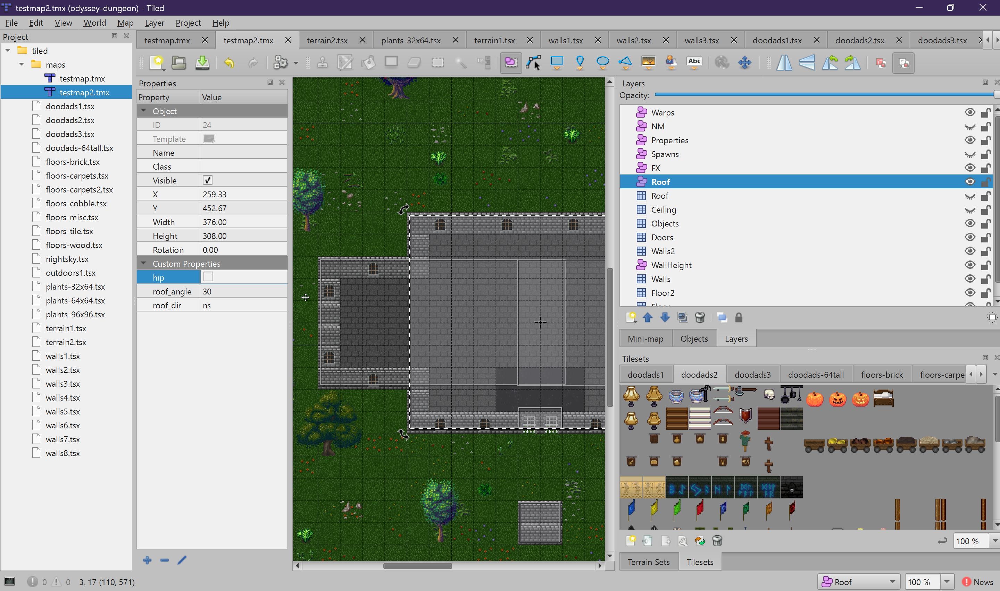

Odyssey Map Making Guide
A complete guide to creating maps for the Odyssey RPG using the Tiled map editor.
Odyssey uses Tiled, a free and open-source 2D map editor,
to define its game maps. Each map is saved as a .tmx file that both the game client and server load
to build the 3D world. Maps are composed of tile layers (which become 3D geometry like floors,
walls, and ceilings) and object layers (which define game logic like warps, monster spawns,
and locked doors).
This guide will walk you through everything you need to know to create maps for Odyssey, from installing Tiled to placing every type of layer the game engine recognizes.

Tutorial Chapters
Getting Started
Download and install Tiled, learn the interface, and open the Odyssey project.
2Creating a Map
Set up a new map with the correct settings, add tilesets, and create your first layers.
3Tile Layers
Floor, Walls, Objects, Doors, Ceiling, and more — everything that becomes 3D geometry.
4Object Layers
Warps, monster spawns, locks, touchplates, items, and other game logic zones.
5Map Properties
Configure map-wide settings like PvP mode, indoor lighting, ambient level, and music.
6Advanced Topics
Roofs, variable wall heights, point lights, particle effects, and directional wall overlays.
7Coordinate Reference
How Tiled's 2D coordinates translate to the game's 3D world, with conversion formulas.
Quick Reference: All Recognized Layers
The Odyssey engine recognizes the following layer names. Names are case-sensitive and must match exactly.
Tile Layers
| Layer Name | Description |
|---|---|
Floor |
Base ground tiles, rendered as flat quads at ground level |
Floor2 |
Overlay floor decals (carpets, paths), rendered slightly above the Floor layer |
Walls |
Solid blocking walls, rendered as 3D cubes |
Walls2 |
Wall overlay decorations (torches, signs), with optional directional face control |
Objects |
Billboard sprites (trees, barrels, furniture) that always face the camera |
Doors |
Animated doors (swinging) and gates (rising) |
Ceiling |
Overhead ceiling tiles for indoor areas |
Roof |
Roof surface textures (used with Roof object layer for geometry) |
Object Layers
| Layer Name | Description |
|---|---|
Warps |
Teleport zones that move players between maps |
Spawns |
Monster spawner areas with spawn ID, count, and delay |
NM |
No-Monster zones where monsters cannot enter |
Keep |
Guild keep / safe zones (similar to NM) |
Locks |
Marks doors within the area as locked (guild, key, or member lock) |
TP |
Touchplate zones that open a specific locked door when stepped on |
Bootmap |
Logout relocation zones (players are moved on disconnect) |
Items |
Static item spawns on the ground |
Properties |
Map-wide settings (name, PvP, indoor, ambient, music) |
WallHeight |
Overrides wall height for a region (for tall walls and towers) |
Walls2 |
Controls which faces render on Walls2 tile layer (directional mask) |
Roof |
Defines roof geometry (ridge direction, slope angle, hip vs gable) |
Lights |
Point light placements with intensity, color, and flicker |
FX |
Particle effect placements (fire, smoke, sparkles) |